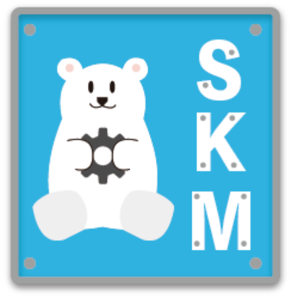
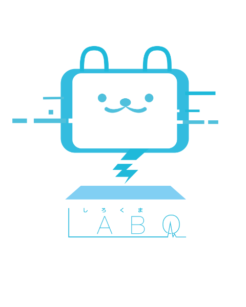
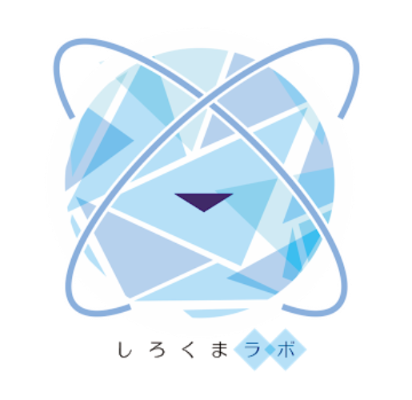
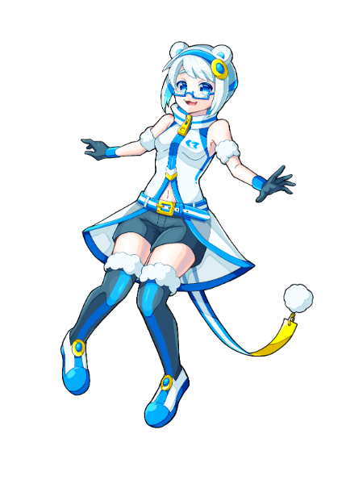
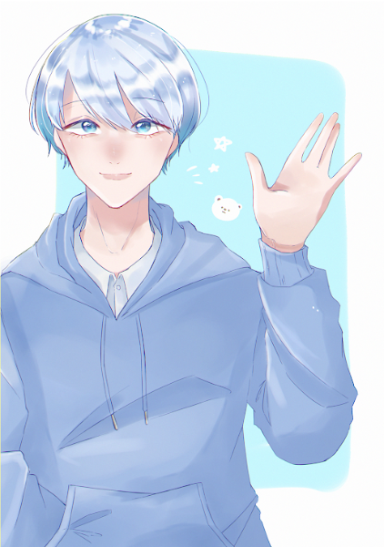

CG学科に依頼してしろくまlabのロゴ、キャラクターを作成していただきました！
作成していただいた作品としろくまlabからのコメントの一部を掲載しています。
作成していただいた作品としろくまlabからのコメントの一部を掲載しています。





- ゆるさとかわいらしさがあふれていてかわいいロゴでした！
- OICをイメージさせる青を背景にしている点も素晴らしい
- 深く潜っているリアルに近いデザインが知的さを感じました
- 画面にしろくまの顔がありキュートで親しみやすさがある
- しろくまとIT系のイメージがうまく盛り込まれていた
- しろくまの擬人化が分かりやすい。ちびキャラもかわいい！
- 緩い感じ、爽やかでかっこいいキャラ
- しろくまを連想させるやわらかい雰囲気が伝わってくる
今回はしろくまlabのロゴ・キャラクターを多数提供していただき、誠にありがとうございました。
見ただけでITのサークルだという事が伝わる良い作品ばかりでしろくまlabのメンバー全員がとても喜んでいます！
これからも何かお願いすることがあるかもしれませんが、その時はよろしくお願い致します！
By しろくまlab